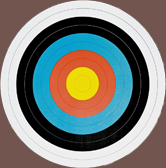

- 1. Stand upright and without tension and with a flat back and dipped chest.
- 2. Place your feet shoulder-width apart, and point them perpendicular to the target.
- 3. Nock the arrow. Use three fingers to lightly hold it on the string.
- 4. Raise and draw the bow.
- 5. Aim at the target.
- 6. Relax your fingers to release the arrow.
- 7. Move your hand back towards your shoulder ear along your jaw.
- 8. release
bågen

skjuta